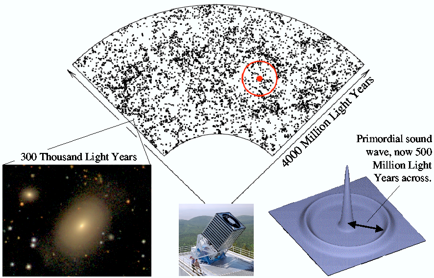

January 11, 2005
SAN DIEGO — In the largest galaxy survey ever, the Sloan Digital Sky Survey (SDSS) confirmed the role of gravity in growing structures in the universe, using the result to precisely measure the geometry of the universe.
The SDSS researchers from the University of Arizona, New York University, the University of Portsmouth, the University of Pittsburgh and the Massachusetts Institute of Technology detected ripples in the galaxy distribution made by sound waves generated soon after the Big Bang.
"These sound waves left their imprint in the Cosmic Microwave Background, remnant radiation from the Big Bang seen when the universe was 400,000 years old. We are now seeing the corresponding cosmic ripples in the SDSS galaxy maps. Seeing the same ripples in the early universe and the relatively nearby galaxies is smoking-gun evidence that the distribution of galaxies today grew via gravity," explains lead investigator Daniel Eisenstein of the University of Arizona.
Eisenstein made the announcement today during a press conference at the winter meeting of the American Astronomical Society in San Diego. The paper, "Detection of the Baryon Acoustic Peak in the Large-Scale Correlation Function of SDSS Luminous Red Galaxies" was submitted for publication to the Astrophysical Journal on December 31, 2004.
Ripples as yardsticks
The early Universe was smooth and homogeneous, quite a contrast from the clumpy array of galaxies and clusters of galaxies observed today. One of the major goals of cosmology is to understand how these structures grew out of the initially smooth universe.
The galaxies we see today consist of ordinary matter, made up of the atoms of our familiar world. However, astronomers have long known that there is roughly five times more "dark matter" than ordinary or "baryonic" matter. Understanding how gravity causes the clumps that will become galaxies and clusters of galaxies to grow as the universe expands requires studying the interaction between ordinary and dark matter.
"In the early Universe, the interaction between gravity and pressure caused a region of space with more ordinary matter than average to oscillate, sending out waves very much like the ripples in a pond when you throw in a pebble," explains SDSS scientist and co-author Bob Nichol, an astrophysicist at the Institute of Cosmology & Gravitation at the University of Portsmouth, the most recent institution to join the SDSS collaboration. "These ripples in the matter grew for a million years until the universe cooled enough to freeze them in place. What we now see in the SDSS galaxy data is the imprint of these ripples billions of years later."
Or gravity's signature could be likened to a ringing bell's resonance in time and space, adds Idit Zehavi of the University of Arizona. "This last ring gets forever quieter and deeper in tone as the Universe expands. It is now so faint as to be detectable only by the most sensitive surveys," Zehavi explains. "The SDSS has measured the tone of this last ring very accurately.
"Comparing the measured value with that predicted gives a yardstick that enables us to determine the rate at which the universe expands, which in turn depends on the amount of both dark matter and dark energy," Zehavi explains. Dark energy is the still mysterious substance driving the acceleration of the universe today.
Waves separated by 500 million light years
The sound waves propagated for the first million years of the universe's history. Their existence was first predicted in 1970 and they were first seen in 1999 in fluctuations in the remnant light from the hot glow of the Big Bang known as the cosmic microwave background. It had long been suggested that these sound waves should also be present in the distribution of galaxies, but the signal was predicted to be subtle and difficult to discern.
To find the signal, the SDSS team mapped more than 46,000 very luminous red galaxies over a volume of space roughly five billion light years in diameter. They found a slight excess of galaxies with separations of 500 million light years, exactly the predicted signature of the sound waves.
"This is just the scale predicted for these ripples", explained David Hogg of New York University, a member of the team. "The precise determination of the distance between ripples allows us to set the scale of the expansion of the universe, which in turn allows us to constrain the properties of both dark matter and dark energy."
SDSS team member Kazuhiro Yahata of the University of Tokyo led a complementary analysis of quasar clustering and credits the huge volume of SDSS data that allows such findings. While Yahata's analysis did not directly detect the 500 million light year yardstick in the quasar distribution, its results are fully consistent with the presence of sound waves.
A similar analysis on a different dataset by the Two Degree Field Galaxy Redshift Survey has also detected the sound waves. "It is impressive verification of the standard cosmological model that two groups with independent data have both made significant detections of the baryon induced features in large-scale galaxy clustering," said Shaun Cole of the University of Durham, lead author of the Two Degree Field study.
"The amazing thing about all these results is that they are in perfect accord with the predictions of our standard cosmological model, including both dark matter and dark energy," says Eisenstein. "So while it all fits together, it still leaves us 'in the dark' about the nature of these two mysterious components which dominate the energy of the universe."
A map of the galaxies in a portion of the Sloan Digital Sky Survey (SDSS). The position of the earth is at the bottom, represented by a picture of the SDSS telescope at Apache Point Observatory in New Mexico. Each dot marks the position of a galaxy, such as the example displayed on the left.
In the first million years after the Big Bang, sound waves are driven into the cosmic gas (bottom right). SDSS researchers have used to map of galaxies to detect the remnants of these waves. The bullseye shows the present-day scale of the sound waves; however, the imprint is too subtle to see by eye.
(CREDIT: Eisenstein, Sloan Digital Sky Survey)